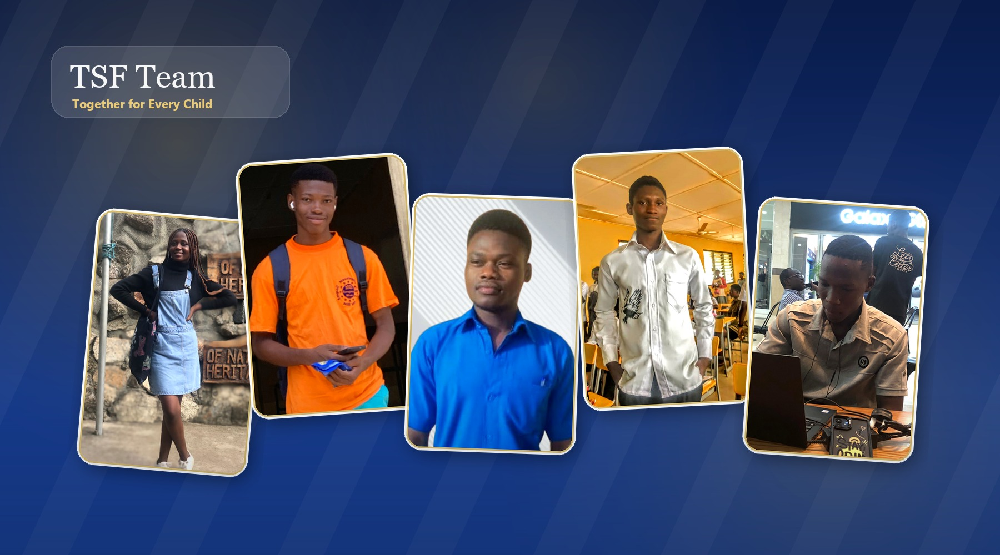
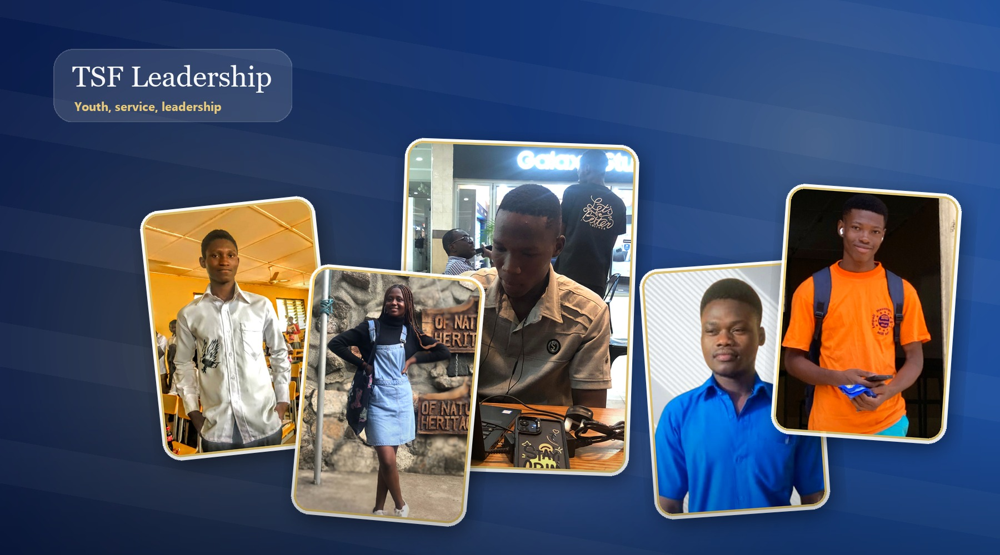

Meet the passionate individuals who dedicate their time and talent to empowering Ghana's children.


Upload a full team photo here when TSF has a group picture ready. This image appears before the leadership briefing on the public Team page.
Our team is built on passion, experience, and an unwavering belief in the potential of every child.
A social entrepreneur and youth advocate with 8+ years of experience in community development. Emmanuel founded TSF after witnessing talented youth unable to reach their potential due to poverty.
A certified educator and child rights advocate. Abena oversees all TSF program delivery, ensuring every child receives maximum benefit from our interventions.
A software developer and digital skills trainer passionate about bridging the tech gap. Kwesi leads TSF's Digital Skills Academy and all technology initiatives.
A certified accountant ensuring every donation is tracked, properly allocated, and reported transparently. Fatima upholds TSF's commitment to financial integrity.
Samuel bridges TSF with communities across Ghana, identifying children in need, building local partnerships, and ensuring programmes reach those who need them most.
A media and communications specialist who tells TSF's story to the world. Grace manages all outreach, social media, and donor communications with clarity and heart.
Experienced professionals who guide and support TSF's strategic direction.
Are you passionate about empowering children and building futures? TSF is always looking for dedicated volunteers, mentors, and partners to join our movement.